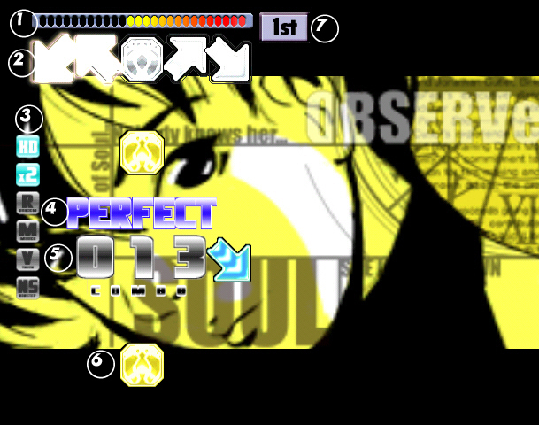
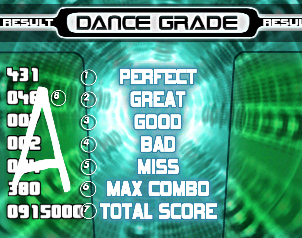

Cómo jugarHistoriaCancionesTrucosLinks
Cómo jugarHistoriaCancionesTrucosLinks
Qué esCómo jugarHistoriaCancionesTrucosLinks
A continuación les explicaré el juego, más específicamente la versión Extra que es la versión más común en Capital Federal, además de algunos detalles de otras versiones.
Para empezar a jugar en cualquier versión del juego hay que presionar el casillero del medio .
.
Luego hay que elegir la canción que quieres jugar. Podes ver la portada de cada canción (que para saber que tan dificíl es esa canción hay que fijarse en la parte de arriba la fila de esferas, cuantas más esferas más difícil) presionando los casilleros laterales azules
 , o podes cambiar de dificultad presionando los casilleros laterales rojos
, o podes cambiar de dificultad presionando los casilleros laterales rojos
 .Para escuchar la canción se presiona el casillero del centro y para seleccionarlo se presiona el mismo casillero por segunda vez.
.Para escuchar la canción se presiona el casillero del centro y para seleccionarlo se presiona el mismo casillero por segunda vez.
Las dificultades (en total de todas las versiones) son:
Normal (fácil) En algunas versiones llamadas Easy, pero a menudo Normales, las flechas casi nunca se superponen. Además, los saltos no tienen normalmente ninguna otra flecha cerca de ella, así que los jugadores pueden entenderla y prepararse en tiempo. La dificultad para este modo se extiende de los niveles 1 a 7 (esferas).
Hard Casi todas las canciones tiene las flechas superpuestas, especialmente 8vas notas (superpuestas en la mitad). 16th-notes (superpuestas en 3/4 partes) son infrecuentes. La dificultad para este modo se extiende normalmente a partir del 3 a 8, con algunas excepciones extendiéndose a partir del 2 a 10.
Crazy Uno de los modos más duro. Todas las canciones tienen notas superpuestas, y lo más también posible tienen 16 o 24tas notas. La dificultad para este modo, hasta que Exceed fue lanzada, se extendió a partir de la 1 a 10; ahora, sin embargo, todos los niveles fueron vueltos a trabajar, y este modo ahora se extiende a partir del 7 hacia adelante, ahora estirando a 21 con el lanzamiento de Zero.
Freestyle (Doble) Previamente llamado Double, pero desde el Prex 3 se empezó llama Freestyle. En este modo, un solo jugador utiliza ambos tableros, teniendo un total de 10 casilleros para utilizar. La mayoría de las canciones aquí son muy similares a sus versiones Hard, con el desafío adicional de tener que moverse a través de ambos tableros. La dificultad para este modo se extiende normalmente a partir del 3 a 8, con algunas excepciones extendiéndose a partir de la 1 a 12, o más. Vook y Love is a danger zone 2 son las excepciones extremas, con grados de 15 y 18 respectivamente.
Nightmare Introducido en el Prex 3, Nightmare es el modo doble más duro. Se juzga como el máximo desafío que Pump It Up tiene que ofrecer. En el Prex 3, todas las canciones Nightmare están en el nivel 99 (que aparece como linea horizontal de los cráneos que van a partir de un lado de la pantalla al otro), pero Exceed las canciones tienen dificultades reales y pueden ir a partir del 8 a 20. En Exceed 2, dificultades para el modo Nightmare fueron de hasta "21", "22" y "??". En Zero, la canción Love is a danger zone 2 se ha clasificado en "23".
Extra Expert (XX) En vez de ofrecer el modo Crazy tradicional, la versión Extra tenía el Extra Expert, donde las canciones tenían un grado especial de la dificultad. Otras versiones utilizan los mismos pasos de este modo en su modo Crazy. Una característica única es que las canciones tienen tanto la versión simple como la doble enumerados en este modo. Los Extra Expert Double eran, como los después introducidos Nightmare, más difíciles que los Doubles originales. Sin embargo, esta versión no está disponible en ningún otro lanzamiento - incluso las canciones que tenían ya Doubles XX en Extra fueron renovadas para sus versiones Nightmare. La dificultad en este modo se extiende del "1r nivel" al "5to nivel", con una canción ("Can Can") estando de un 6to "nivel final".
Half-Double En este modo, un solo jugador permanece en el centro de ambos tableros y utiliza las seis flechas internas para jugar: flechas de centro y de derecha del tablero izquierdo, y las flechas de centro y izquierdas del tablero derecho. La dificultad en este modo se extiende a partir del 2 a 10. Este modo estaba presente en Rebirth, Premier 2, Premier 3, y Prex 3.
Nonstop Remix Este modo primero apareció en lanzamientos coreanos, y ofreció canciones más largas que mezclaban dos o tres canciones de los artistas ofrecidos en otras canciones del juego (la mayoría de las canciones mezcladas también eran parte del juego). Pues las canciones son más largas, mucha gente las considera también más fatigosas. La mayoría de las versiones del juego consideran que las canciones remixadas valen más de una canción debido a su alargada duración, así que los jugadores jugarán menos canciones en modo Remix que en un modo normal. Como Extra Expert, este modo también ofrece versiones simples y dobles de cada canción. La dificultad en este modo se extiende a partir del 4 a 7, con una excepción en el nivel 9. Nonstop Remix más adelante volvió en la versión de Exceed 2, y ahora se califican en la misma escala 1-20 que el resto de las canciones, llegando a tener números más altos que cualquier canción normal. También, todo Nonstop Remix en Exceed 2 ahora tiene modos Crazy y Nightmare ocasionales, por primera vez en la serie.
Modo Battle En este modo del juego, dos jugadores compiten en dos canciones en modo Hard y una canción en modo Crazy. El ganador para cada canción es el jugador que consigue el puntaje más alto. En versiones hasta Premier, un jugador podría "atacar" (causar un efecto modificante, como acelererar o desaparecer) a las flechas de movimiento en sentido vertical del opositor acumulando un combo y después rompiéndolo. El efecto dependió del combo acumulado por el atacante. En el Prex y Extra esta característica fue eliminada. Lanzado recientemente Exceed 2 la trajo de vuelta en una nueva "estación entera" como fue referida. Habría flechas adicionales que contienen energía power ups que se accionan presionando el siguiente paso. La batalla se podía decidir en solamente 1 canción en la mayoría de los casos. La rotura de la etapa no afecta este modo.
Modo Combo Battle En este modo los jugadores acumulan combos y el combo más alto gana. El único requisito para ganar es conseguir un combo máximo más alto. Este modo fue introducido en Premier y Rebirth.
Modo Mission Introducido en PIU Zero, este modo es basicamente despejar las canciones que se denominan como "misiones" y se abren otras más después de acabar esas misiones. Hay cerca de 30 misiones. Despejarlas darán recompensas como canciones ocultadas, pieles, y otros modos. Cada misión se divide en tres canciones, o etapas, y es alineada en dificultad por el número de las estrellas demostradas. Si se falla una canción, el jugador tiene la opción para continuar la misión y para procurar la etapa otra vez.
Another Step Introducido en PIU Zero, este modo tiene canciones que tengan pasos alternos. La mayoría de los pasos en este modo son experimentales con elementos (a menudo extraños o extremadamente difíciles) únicos que nunca se encontraron en el juego. Another Step solo estaba disponible en la estación Remix de Exceed 2, mientras que Zero dedica un canal entero a él. El canal Zero incluye varias canciones regulares del juego. Las canciones en él e incluso el canal en sí tienen que ser abiertas lentamente desbloqueando misiones.
Cuando empieza a sonar la música aparece la pantalla de juego que se ve a continación:

Los elementos que se encuentran en esta pantalla son:
1)La barra de vida, que va aumentando cuando se hacen combos y disminuyen cuando se pierden pasos. Al principio tiene la mitad de la barra llena, que va cambiando de un rojo (alerta), pasando por un amarillo (estable), y llegando a un verde (satisfactorio). Si cae hasta la parte roja del fondo de la barra, significa que hubo una importante cantidad de errores y puede fallar toda la etapa (más todavía si está activada la rotura de etapas).
2)Los "moldes" que se encuentran en la parte superior de la pantalla sirven para delimitar el momento en el que se debe presionar el casillero correspondiente. Si se presiona en el momento adecuado las flechas brillan en el molde, sino seguirán de largo hasta desaparecer.
3)Los "items" que forman una columna vertical se encontraban en todas las versiones anteriores al Exceed mostrando solamente los trucos aplicados, pero a partir del Exceed 2 entre esos items aparecen todos los trucos juntos y tambien la dificultad. Claro que solo se aplican los items que están coloreados.
4)Cuando una flecha pasa por el molde, se califica la precisión del paso dado con los términos PERFECT (perfecto, paso exacto), GREAT (genial, paso muy acertado), GOOD (bien, paso acertado), BAD (mal, paso no acertado) y MISS (perdido, paso ignorado).
5)El número que aparece debajo de la clasificación de los pasos, cuenta el combo o sea PERFECTs y GREATs consecutivos que va acumulando el jugador en esa canción. Un GOOD no para el combo, pero un BAD o un MISS sí. Esta cantidad influye en la puntuación final y más todavia en el modo Combo Battle.
6)Las flechas que deben presionarse aparecen desde abajo en la pantalla y van subiendo hasta el molde. Su velocidad depende del ritmo de la canción y de los trucos de velocidad aplicados (2x, 4x, 8x y Rush). A veces, un jugador debe presionar dos o más flechas simultáneamente. Cuando dos flechas llegan a los moldes simultáneamente, esto se conoce como salto, porque el jugador debe saltar en el aire para golpear las dos flechas con sus dos pies en el mismo tiempo. En las canciones más duras, tres flechas o más pueden ir para arriba inmediatamente. En tales casos, los jugadores intentan normalmente golpear dos botones del tablero con un solo pie, o se inclinan y utilizan sus manos y/o rodillas para ayudar. En las nuevas versiones del Pump It Up, los saltos incrementan el contador combo por uno. Sin embargo, las versiones hasta el O.B.G. Season Evolution, sin embargo, anotaron saltos diferentemente: cada flecha era independiente, significando que golpeando solamente una flecha de un salto de la dos-flecha contaría como no-MISS. (un PERFECT, por ejemplo) seguida por un MISS , y golpear ambos podría aumentar al combo en dos. Los pasos de Multi-flecha fueron introducidos primero en Pump It Up, en el primer lanzamiento del juego en 1999. Las vesiones Extra, Exceed, Premiere 3 y las series de Prex también ofrecen otra clase de flecha en la pantalla, normalmente llamada nota mantenida o nota larga. Estas flechas parecen versiones estiradas de las flechas regulares. Su casillero correspondiente debe ser sostenido hasta que la flecha entera pase a través de los moldes. Si se lanza la flecha antes de que se termine la nota, uno puede recuperarse sin importar por cuánto tiempo la nota no fue llevada a cabo. Para cada paso dado que se considere superpuesto, dependiendo de la versión y de la canción y de su ritmo, por cada nota mantenida, un PERFECTO se anota; si no se mantiene, cuenta una MISS.
7)En este cuadro aparece el nombre de la etapa que se está jugando (Primera Etapa, Segunda Etapa, Etapa Final y Etapa Bonus).
Cuando la canción termina, desaparece la pantalla de juego y aparece un cartel que te dice si pasaste o no a la siguiente etapa (STAGE CLEAR o STAGE FAILED), y luego se crea la tabla de calificación que se muestra a continuación:

El desempeño que el jugador presentó para la canción se mide a través de los grados, que se relaciona con el orden alfabético de las letras que simbolizan el puntaje definitivo. La escala va de la A a la D, pero una S significa Sobresaliente o Super, cuando se consigue un desempeño muy perfeccionado que sólo incluya PERFECTs y GREATs; y una F significa Fallado y no se sigue jugando (a menos que estén jugando dos personas y sólo una saque F). Esta escala es muy importante, ya que no sólo te indica la calidad de "baile", sino que también al conseguir S y/o A en las tres etapas se puede jugar una cuarta etapa (Etapa Bonus). No se puede conseguir más de un bonús aunque sigas sacándote A o S.
Luego aparece otro cartel que dice GAME OVER y se termina la partida.
Los jugadores juegan generalmente hasta haber superado todas las etapas del juego (generalmente entre 2-5 canciones), o cuando el jugador falle una canción. En algunos casos, los jugadores pueden "fallar" una canción y terminar prematuramente su juego, y en otras, los jugadores pueden ganar una canción extra por el desenvolvimento ejemplar en las canciones jugadas previamente. También, el maquinista puede girar una función conocida como "rotura de la etapa," haciendo el juego parar inmediatamente una vez que agoten la barra de vida. Si la rotura de la etapa está apagada, los jugadores fallan solamente la canción (y haga el juego parar) si pierden 51 pasos seguidos.